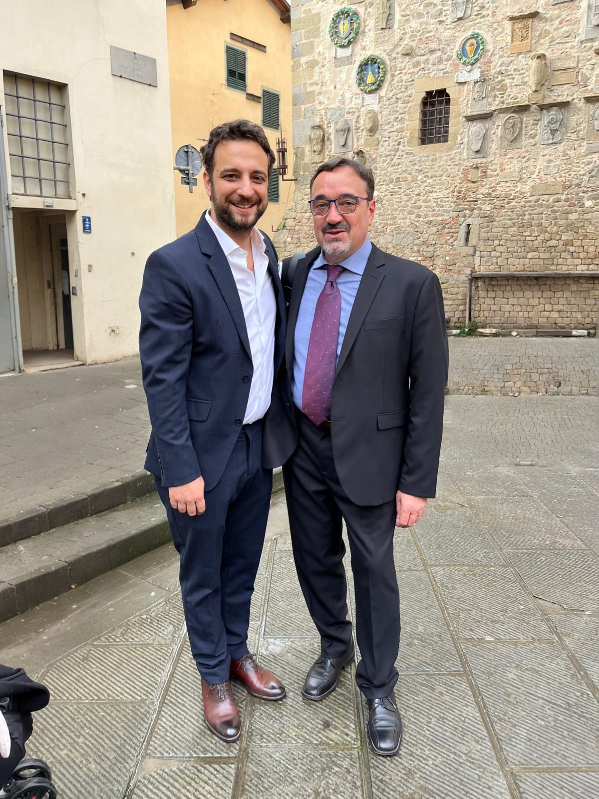
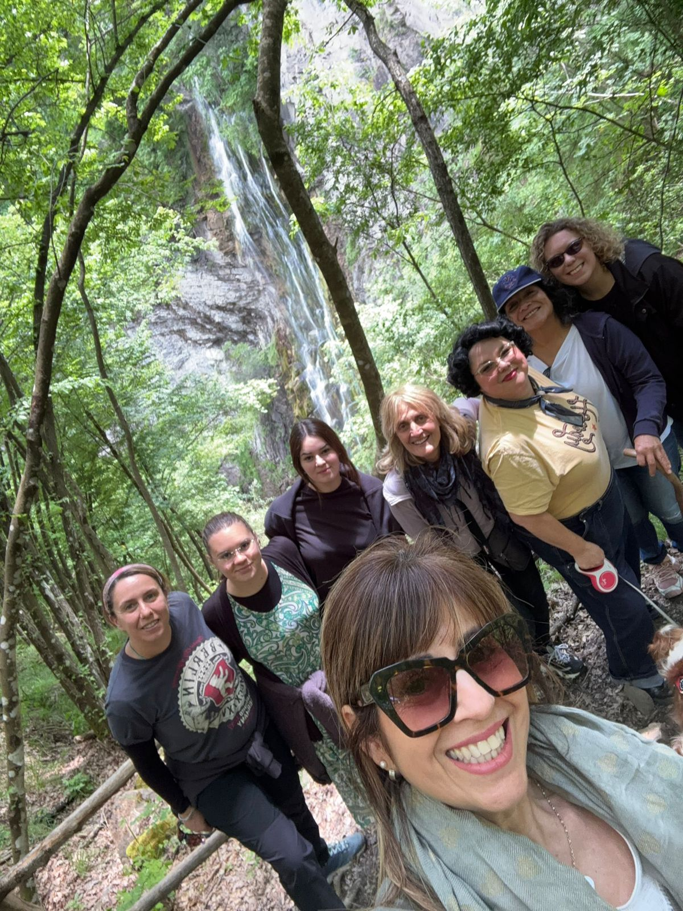
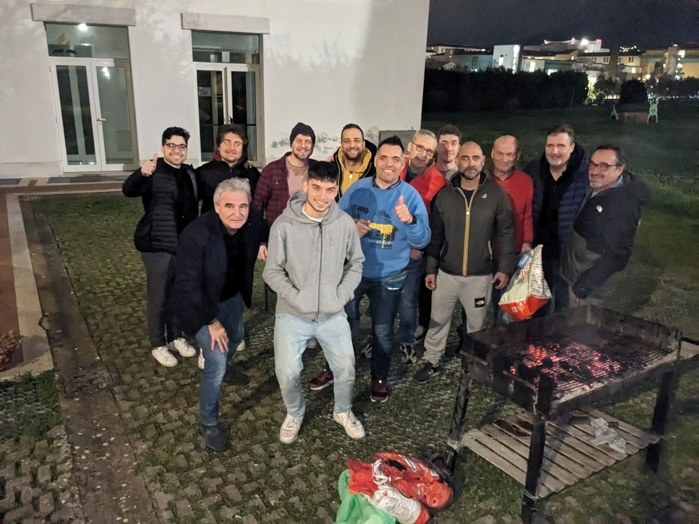

La sovranità di Dio
Espressa nella creazione, nella provvidenza e nella redenzione.
Siamo una chiesa di Firenze che trova la sua identità nella grazia di Dio rivelata in Cristo. Crediamo che la Bibbia sia la Parola di Dio, sufficiente per la fede e per la vita, e che Cristo sia il capo della chiesa.
Uniti nella Speranza, Legati nella Fede
Cristo crocifisso e risorto è il cuore della nostra predicazione, del nostro culto e della nostra vita insieme.
La Scrittura è la nostra regola di fede e di condotta: la predichiamo in modo espositivo, libro dopo libro.
Desideriamo conoscere Dio come si è rivelato e lasciare che la verità plasmi il cuore e la vita.
Siamo una famiglia di credenti che si ama, si serve e si edifica a vicenda, guidata da anziani.
Una sintesi della nostra confessione di fede. Il testo completo, con i riferimenti biblici, è nella pagina Credo.
Leggi il Credo completoEspressa nella creazione, nella provvidenza e nella redenzione.
Divinamente ispirate, attendibili e infallibili.
Un solo Dio in tre persone: Padre, Figlio e Spirito Santo.
Mediante la fede in Cristo, non per le nostre opere.
Il battesimo per immersione dei credenti e la Cena del Signore.
L'autorità suprema della chiesa è Cristo.

Battezzato nella chiesa nel 2011, sposato con Michela dal 2015 e padre di due figli. Ha conseguito il Certificato in Teologia presso l'Istituto Biblico Evangelico Italiano (2023).
Presentazione da completare con il pastore.

Accoglienza alle 10.00, culto dalle 10.30 alle 12.15. Via del Pergolino 1/4.

La chiesa si riunisce per studiare la Parola e pregare insieme. Via del Pergolino 1/4.

Studio biblico induttivo e comunione fraterna. Luogo variabile: scrivici per i dettagli.

Sorelle che si incoraggiano nella Parola e nella preghiera. Luogo variabile.
Lo studio del Vangelo di Giovanni. Il link si riceve su richiesta.

Una cena insieme e poi la discussione sulla Parola. Via del Pergolino 1/4.